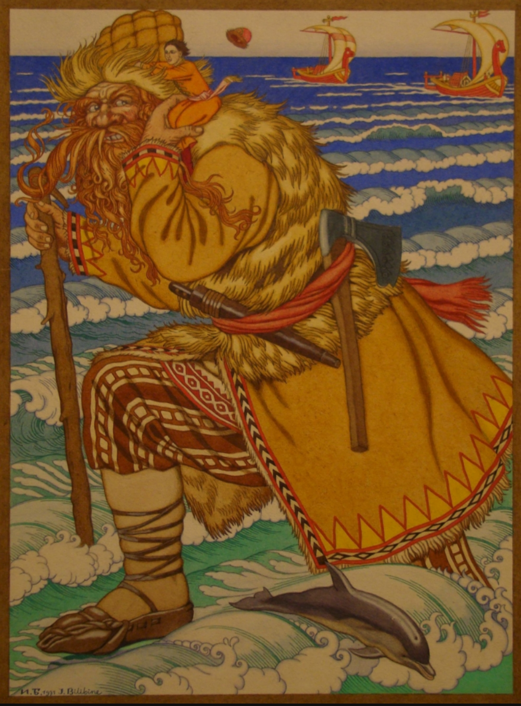

"About Ivan the Fool" (dir. Mikhail Aldashin 2004).
Prior to his/her adventures and ultimate success, the youngest child is often despised as weak and foolish by his siblings or parent. In case of the youngest duaghter tale, she is usually a step daughter. In the Russian version of the tale, the male youngest child is usually called Ivan-the-Fool.
